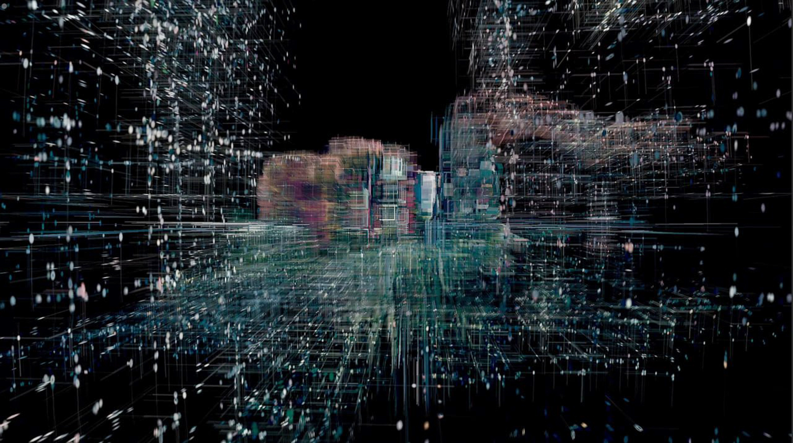
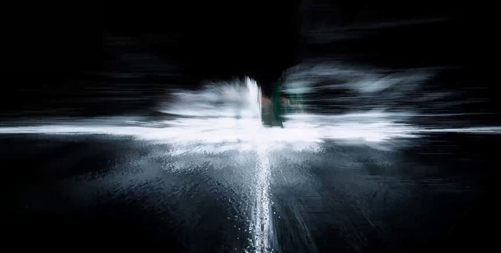

av_earth
2026
Audio Visuals Performance
This project is a 7-minute audiovisual performance that reflects my personal experience and emotions as someone who moved between countries and continents throughout much of my life.
The 3D model that serves as the base of the work is a real place, which I have downloaded from Google Earth.
Through music and layers of effects, I experimented with a form of narrative storytelling intended to immerse the viewer and connect with their own experiences. The work explores how a place can become distorted in memory, filtered through emotions, and layered with the feelings of a particular period of our lives.
Software: Unity, Blender, Ableton
Controlled with a MIDI Keyboard


